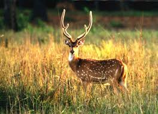

Chana bhel
chana chaat is a tangy and tasty snack made from black chickpeas. It is much similar to the green chana chaat that one gets at juhu beach in Mumbai. .
" Beautiful City in Vidarbha "
According to local interpretation the name Bhandara is a corruption of Bhanara. Reference to Bhanara is found in an inscription of 1100 A.D.traced at Ratanpur. The district was under regency administration from1818 to 1830. Prior to 1820, the district was administered from Lanji,thereafter the headquarters of the district were shifted from Lanji toBhandara in 1820-21.... The area became British Territory in 1853. In 1881 there were only two tahsils viz., Tirora and Sakoli in the district. There were no major changes in the boundaries of the district or its talukas between 1911 and 1955 exceptthat the headquarters of Tirora tahsil were shifted to Gondiya and name of the tahsil was changed to Gondiya tahsil in 1914.From 1947 to 1956 the district of Bhandara along with the other districts of Vidarbha region continued to form a part of the central provinces. With the reorganization of states in 1956, Bhandara district was transferred from Madhya Pradesh to the Bombay State, which came into existence in the same year. In 1960,with the formation of the state of Maharashtra it formed a part of the newly created State.


2500 years ago Buddha Dharma raised in India and after 1700 years it was extinct from India. The birth place of Buddha Dharma is India. Pannya (Wisdom) Metta (Mercy) Sangha (PMS) was established to spread Buddha Religion. The motive was manifestation and expansion of Buddhism, social, educational and cultural progress of the poor and troddens all over India thru its work. For this purpose Mahasamadhi Bhoomi was made in 1987 in Ruyad situated at Tah. Pauni District Bhandara in state of Maharashtra. Pauni was an ancient town and known as one of the main centres of Buddha culture from the times of Samrat Ashoka. Since 1987, every year people gather together for the Dhamma Mahotsav as a religious festival at Mahasamadhi Bhoomi. In this same sector, on the bank of Wainganga river Mahasamdhi Bhumi Maha Stupa inaugurated on 8th of February 2007. Many other people from different countries like monks and other famous personalities came here to celebrate this festival. On the day Poornima and Amavasya of every month thousands of people came together to pray and worship the god. Now a day’s Mahasamadhi Bhoomi which is one of the best samples of Buddhist sculpture and become a Buddha Pilgrimage site. In this environment the important events of the life of Buddha are presented in the form of Statues, which create religious feelings in the minds of incoming viewers. On the day of 'Makarsankranti' a celebration of the marriage of Marleshwar and Girijadevi takes place. On 'Mahashivratri' and 'Tripuri Poornima' there is a fair. Marleshwar name may have come from Maral village .
Official Designation of Rawanwadi Dam Irrigation Project is ” Rawanwadi Dam , D – 04708 ” . However local and popular name is ” Rawanwadi Lake / Rawanwadi Talav “. Rawanwadi Dam was constructed as part of irrigation projects by Government of Maharashtra in the year 1960. It is built on and impounds a Local nallah , Nearest city to dam is Bhandara in Bhandara District of Maharashtra . The dam is an Earth fill Dam .The Length of dam is 96 m ( 314.961 Feet ) , while the Height of the dam above lowest foundation is 12.44 m ( 40.8136 feet ) . Project has no proper spillway as such.Length of the spillway is not known. The Dam has ungated .Dam’s catchment area is not known . Maximum / Gross storage capacity is 6.9 MCM. Live storage capacity is 8.75 MCM. Now a days almost all the water bodies make for good picnic spots. Rawanwadi Lake is also a popular Tourist attraction for its scenic beauty .Hilly terrain and forest adds to the natural beauty.
Umred Karhandla Wildlife Sanctuary, about 58 km from Nagpur and 60 km from Bhandara spreed over Pauni Tahsil of Bhandara district and Umred, Kuhi and Bhivapur Taluka of Nagpur district.This Sanctuary has also connection with Tadoba Andhari Tiger Reserve through forest along Wainganga river. The sanctuary is home to resident breeding tigers, herds of Gaur, wild dogs and also rare animals like flying squirrels pangolins and honey badger. It is bounded roughly by the Wainganga river and the Gose Khurd Dam on the northeast, State Highway 9 and Bhiwapur Town on the south, Umred on the west and a narrow 10 km long range of 600-800 m hills to the northwest. It is located 40 km north of Tadoba-Andhari Tiger Reserve and 50 km southwest of Nagzira Wildlife Sanctuary & 60 km from Nagpur, Maharashtra. Pench Tiger Reserve is 80 km to the northwest.
Korambhi is a village in the Bhandara tahsil of Bhandara District of Maharashtra state in India. There is a temple to the Hindu goddess which is situated on the hill of Korambhi. It is a holy place among Hindus. Korambhi is famous for this Temple. The village is situated on the bank of Wainganga River.
Gose Khurd Dam, (Marathi: गोसे खुर्द धरण) is an earthfill dam on the Wainganga River near Pauni in Bhandara district in state of Maharashtra in India.[1] The dam consists of 33 Nos of spillway gates to regulate irrigation water into the river throughout the year. The height of the dam above lowest foundation is 22.5 m (74 ft) while the length is 11,350 m (37,240 ft). The dam volume content is 3.83×106 m3 (135×106 cu ft) and gross water storage capacity is 1,146×106 m3 (40.5×109 cu ft). Its purpose is irrigation.[2]
Koka was approved as a wildlife sanctuary only a year ago in 2013.. The park is situated barely 20 km from the district of Bhandara and close to Nagzira Wildlife Sanctuary. The total area of the park is 92.34 sq. km. Koka has an abundant population of tigers and leopards. There are herbivores like Gaurs, Cheetals and Sambhars. Koka plays the role of a safe haven for animals that wander away from Nagzira and New Nagzira Sanctuaries in search of a new habitat. It is located 60 kilometers from Nagpur, which has an international airport. Trains, buses and cabs are available for Koka from here. The nearest railhead is Bhandara, 20 kilometers away. Tourists can either hail a cab or take a bus from here to Koka. The jungle safaris operate from 6:30 to 10:30 in the morning and from 3:00 to 6.00 in the evening. The route is 44 km. long and takes about 3-4 hours to cover. The park stays closed on Thursdays.The best time to visit the park is during and between the months of November and June. An unusual thing about the sanctuary is that vehicles are not available for hire. Tourists need to bring your own vehicles. The vehicle they bring must not be too old, noisy or chuck out too much smoke. Such vehicles may be turned away. It would be a good idea to seek permission from the forest authorities in Bhandara for your vehicle prior to setting out from home. Those planning to book a vehicle must also take note.

chana chaat is a tangy and tasty snack made from black chickpeas. It is much similar to the green chana chaat that one gets at juhu beach in Mumbai. .
Bhaji Vada or lentil and vegetable fritters is a popular snack in the Northern part of India
it is sweet, crunchy and cicular shaped
Special Pohe that you will get into bhandara
Amazing combination of Bhel and egg
Special Bhandara's cuisine


Address: MH SH 252, Madhav Nagar, Bhandara, Maharashtra 441904
Timing: 9am to 8pm.

Address: Muslim library Square, Santaji Nagar, Bhandara, Maharashtra 441904
Timing: 10am to 9pm.

Address: Bhandara - Balaghat Rd, Madhav Nagar, Bhandara, Maharashtra 441904
Timing: 9am to 9pm.

Address: Near annapurna temple, Bada Bazar Rd, Bhandara, Maharashtra 441904
Timing: 8am to 10pm.

Address: J.k. plaza ,main road, Bada Bazar Rd, Santaji Nagar, Bhandara, Maharashtra 441904
Timing: 9am to 9pm.

Address: Unnamed Road, Santaji Nagar, Bhandara, Maharashtra 441904
Timing: 10am to 8.30pm.

Nagpur is a large city in the central Indian state of Maharashtra. The 19th-century Nagpur Central Museum displays items found locally, including fossils, sarcophagi and Mughal weaponry. The Raman Science Centre has hands-on exhibits and a planetarium
Gondia is a city and municipal council in the Indian state of Maharashtra which serves the administrative headquarters of the eponymous administrative district. Gondia is also known as Rice City due to the abundance of rice mills in the area
Chandrapur is a city and a municipal corporation in Chandrapur district, Maharashtra state, India. It is the district headquarters of Chandrapur district. Chandrapur is a fort city founded by Khandkya Ballal Sah, a Gond king of the 13th century. The city sits at the confluence of the Irai river and Zarpat river.